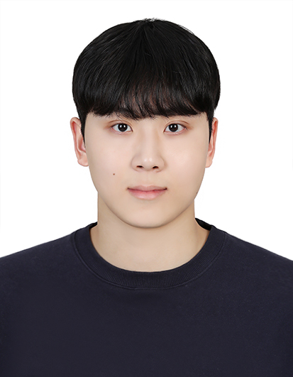

Mar – Sep 2026
Microsoft Research Asia
Intern · Machine Learning Group
On-site, Beijing. Research collaboration ongoing.
I am a third-semester Ph.D. student in Artificial Intelligence at Korea University, advised by Prof. Byung-Jun Lee in the Decision Making Lab. My research focuses on reinforcement learning, with a recent interest in robotics.

Intern · Machine Learning Group
On-site, Beijing. Research collaboration ongoing.
Integrated M.S.–Ph.D. in Artificial Intelligence
Entered graduate school in September 2022.
B.S. in Biomedical Engineering
Donghyeon Ki, JunHyeok Oh, Seong-Woong Shim, Byung-Jun Lee
Myunsoo Kim, Donghyeon Ki, Seong-Woong Shim, Byung-Jun Lee
Woosung Kim, Donghyeon Ki, Byung-Jun Lee